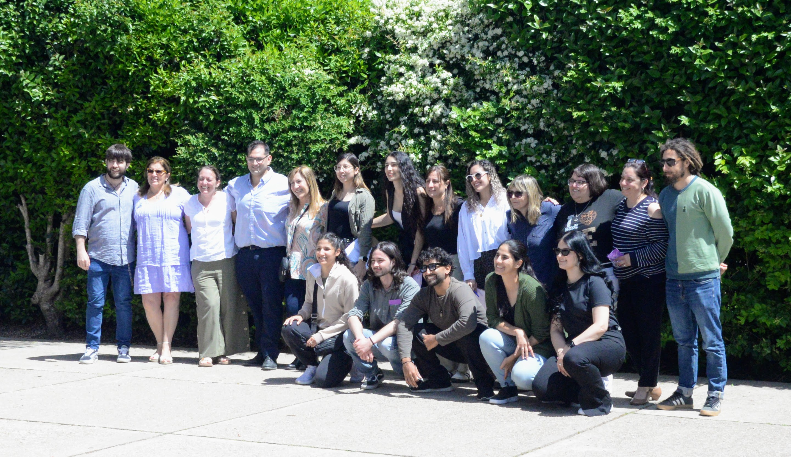
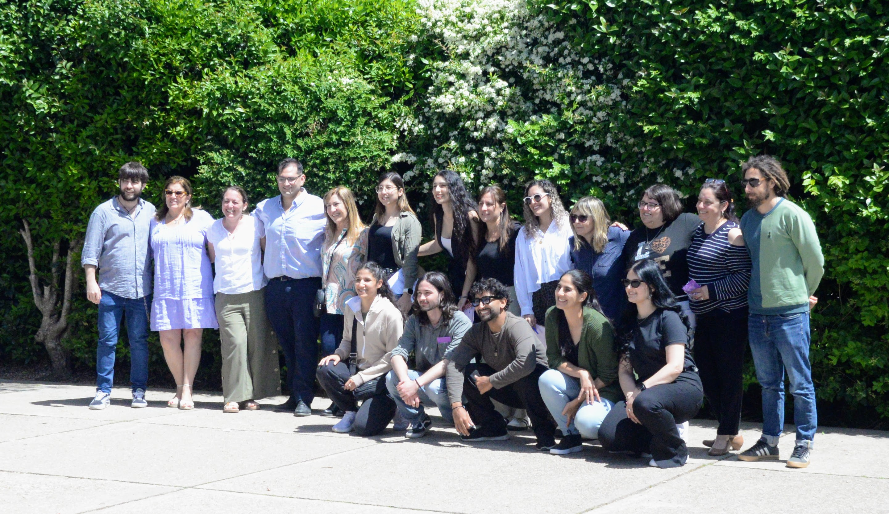

9no2, LIBB
Somos una clase que consiste de 11 estudiantes. A veces hay diferencias, pero a la hora de ayudar a estudiar horas antes del escrito, estamos todos unidos.
Estudiantes
Mía Curbelo
A Mía le gusta la playa
No le gusta el pollo
Aaron Machado
Disfruta dormir e hibernar.
Odia los lunes.
Jano Medina
Le gusta dibujar, y leer, pero depende.
No le gusta que le toquen el pelo.
Facundo Ottonelo
Dice que no le gusta bailar para Tiktok pero siempre lo termina haciendo.
No le gusta estudiar.
Lorenzo Olivera
Disfruta de jugar videojuegos móviles.
Prefiere no dar orales/presentaciones.
Luka Predeira
Le gustan las Malvinas.
Le aburre Clash Royal.
Nikolás Pissarouk
Me gusta dbujar y escribir.
No me gusta tanto leer.
Belén Ramos
Le gusta comer pizza
No le gusta correr mucho.
Ámbar Reyes
Le encanta bailar.
No disfruta de matemáticas.
Exequiel Ricardo
Es de esos que no duermen y se quedan jugando.
Se aburre en clase de historia.
Paula Trujillo
Escuchar a Justin, y usar Instagram
El mondongo
MundiLIBB
El MundiLIBB es un evento interno del Liceo Integral de Barros Blancos. Donde los estudiantes preparan sus orales, vestimenta, presentación artísticas, souvenirs, decoración de clase, entre otros, basados en la temática del año y de su grupo
Éste año, la temática general es resiliencia, presentando figuras históricas con grandes logros. A nuestra clase, le ha tocado Alan Turing.
Recuerdos

 
